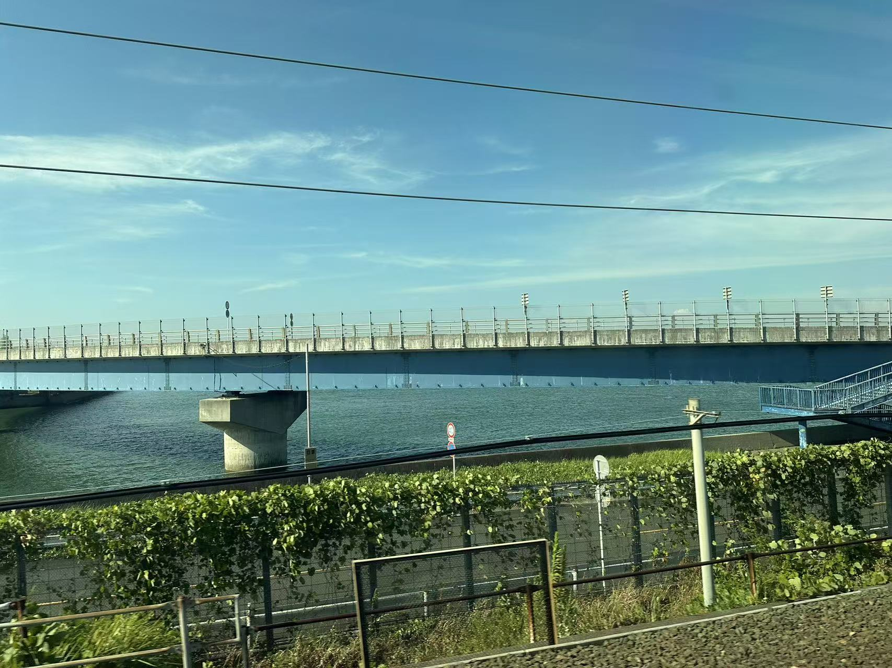

This page is mainly introduce the areas or countries that I have traveled,and my thoughts after traveling
Japan is a globally renowned travel destination and a top choice for Chinese citizens traveling abroad. The summer after my high school graduation, I embarked on a solo independent journey there. My flight from Chengdu landed in Tokyo at 9 AM the next morning. After navigating the long queue at immigration, I followed the directions to board the Keisei Line into the city center. As the train ascended to street level, the sunlight hit me, and the brilliant blue of the Japanese sky immediately caught my eye. Having lived under the perpetual haze of Chengdu, a sky so clear was a revelation. The local service staff, radiant and energetic, mirrored that clear sky, at least in their professional demeanor. As anticipated, the Japanese people I interacted with were polite and disciplined, and the streets were immaculate. Tokyo’s urban planning is superb, and I found the distinct streetscapes appealing. Public transportation is highly efficient; various private subway lines operate alongside the JR system, making much of the city easily accessible. Commercial districts like Shibuya and Ginza were bustling with foreign tourists, yet the purely commercial atmosphere of central Tokyo did not hold my interest. I soon ventured toward the city’s outskirts and the region of Kyoto."
Places like Arashiyama and Fushimi Inari Taisha in Kyoto, and Gotokuji Temple in Tokyo's suburbs, were far more captivating. These areas are steeped in Japanese cultural heritage, seamlessly fused with the natural environment. The historical sites are exceptionally well-preserved: the beautiful ancient architecture, the sanctity of the shrines and temples, and the lush green mountains and clear waters of nature held a far greater appeal for me.
Next, I traveled to Nara, another ancient cultural capital adjacent to Kyoto. Beyond its own temples and shrines lies the famous Nara Park. Due to the tradition of Kasuga Taisha Shrine viewing deer as messengers of the gods, the local wild deer population in the surrounding area has been protected. Today, approximately 1,200 wild deer roam the park, making them a unique tourist attraction. Visitors can interact directly with the animals. After purchasing deer crackers, I observed the deer 'bowing' like people when begging for food. I happily fed and stroked them; aside from the rutting deer, most were quite docile.
To travel from the Kanto region to Kansai, I took the Tokaido Shinkansen—the world's first high-speed rail line. Although China's high-speed rail technology, which learned from Japan, now operates at comparable speeds, I still preferred the Japanese travel experience. Cleanliness and impeccable order permeate so many aspects of life in Japan, and the Shinkansen was no exception. The Japanese countryside we sped past was also beautiful. It was a thoroughly satisfying trip.
